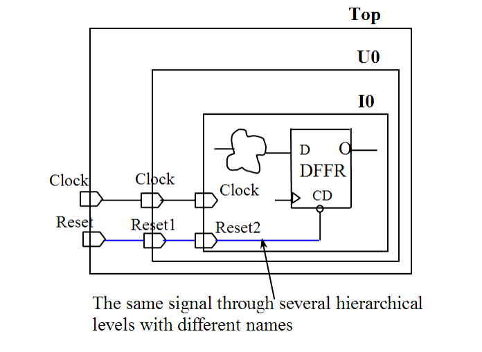

| Description | This rule fires when Leda detects a signal that passes through several hierarchical levels and is not named with the same string. Naming a signal with the same string makes it easy to identify the signal through all hierarchical levels. |
| Policy | DESIGN |
| Ruleset | STRUCTURE |
| Language | VHDL/Verilog |
| Type | Hardware |
| Severity | Error |
This is an example of invalid Verilog code, followed by a circuit diagram that illustrates the problem:
module ntl_str05_top; input Reser; ... assign Reset1 = Reset; B_hier1 U0(.Clock(Clock),// OK -- Clock with the same name .Reset_hier1(Reset1), ...); // NTL_STR05 fires -- Reset1 without the same name endmodule module B_hier1 (Clock, Reset_hier1, ...); input Clock, Reset_hier1; ... assign Reset2 = Reset1; B_hier2 I0(.Clock(Clock), // OK -- Clock with the same name .Reset_hier2(Reset2), ...); // NTL_STR05 fires -- Reset2 without the same name endmodule module B_hier2 (Clock, Reset_hier2, ...); ... endmodule